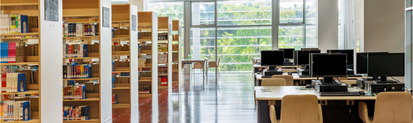

香港中文大学2018年就业情况表(更新)
艺术楼的北国剧场，座无虚席。开幕式由我院音乐系系主任郭兰兰教授主持。首先，郭兰兰教授介绍了各位到场的嘉宾、专家及本届国际音乐周的概况。接下来，我院院长胡智锋教授致辞。胡教授指出，在全球化的大背景下，高校“双一流”正是我国致力于提升国家核心竞争力、走向世界，而提出来的高瞻远瞩的战略决策。而本届国际音乐周，也正是我院音乐系向“双一流”学科迈进的重要举措之一。

艺术楼的北国剧场，座无虚席。开幕式由我院音乐系系主任郭兰兰教授主持。首先，郭兰兰教授介绍了各位到场的嘉宾、专家及本届国际音乐周的概况。接下来，我院院长胡智锋教授致辞。胡教授指出，在全球化的大背景下，高校“双一流”正是我国致力于提升国家核心竞争力、走向世界，而提出来的高瞻远瞩的战略决策。而本届国际音乐周，也正是我院音乐系向“双一流”学科迈进的重要举措之一。